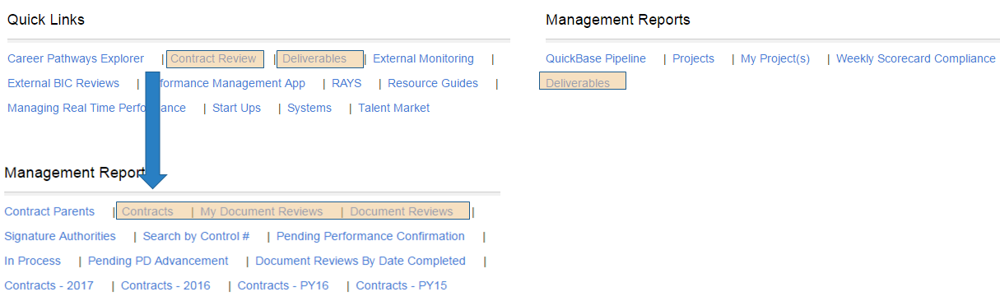
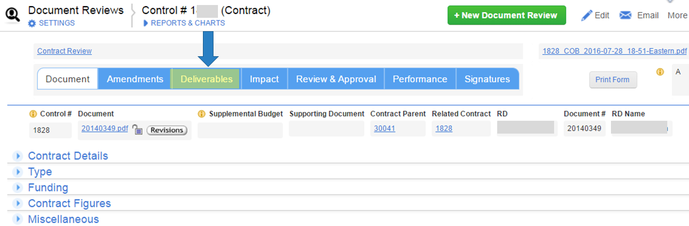
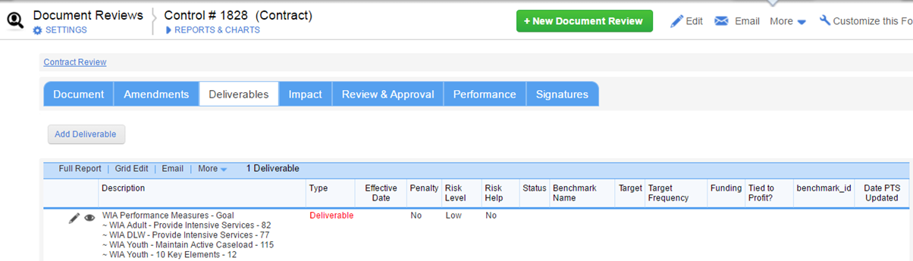
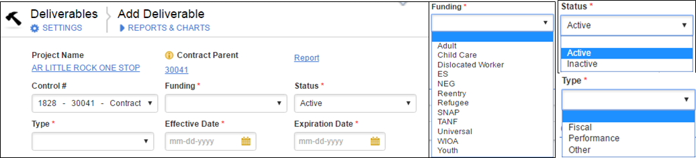
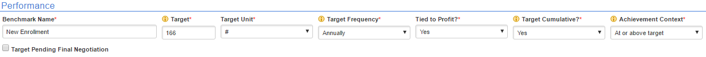

Inventory
Contract Deliverables are the standards and goals in which the project must meet by the end of the program year, monthly, or quarterly. The control #, Funding type, the type of deliverable, and the effective dates of the deliverable will now need to be cataloged in QuickBase and In addition a description, penalty assessment, and risk level will need to be addressed.



Add Deliverable

Contract Parent - Comes from related Document Review.
* Required Fields – Funding, Status, Type, Effective and Expiration dates

Target - If the target is currently unknown, select the 'Target Pending Final Negotiation' checkbox
Frequency- The number of months by which the overall target needs to be met (monthly, quarterly, annually, etc.) Monthly expectations can have a YTD expectation when cumulative targets are set.
Target Cumulative - Enter "No" if each month's entry only includes that particular month's performance.
Achievement Context - Performance achievement usually has to be at or above target, but sometimes the reverse is true. An example might be "Ranking", where finishing at or below 5th place is considered a success
Created with the Personal Edition of HelpNDoc: Easily create CHM Help documents